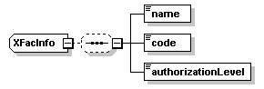

| diagram |
 |
| namespace |
http://www.cisco.com/AXL/API/10.5 |
| children |
name code authorizationLevel |
| used by |
|
| source |
<xsd:complexType name="XFacInfo">
<xsd:sequence minOccurs="0">
<xsd:element name="name" type="axlapi:String50" nillable="false" minOccurs="1" maxOccurs="1"/>
<xsd:element name="code" type="axlapi:String16" nillable="false" minOccurs="1" maxOccurs="1"/>
<xsd:element name="authorizationLevel" type="axlapi:XInteger" default="0" nillable="false" minOccurs="1" maxOccurs="1"/>
</xsd:sequence>
</xsd:complexType> |